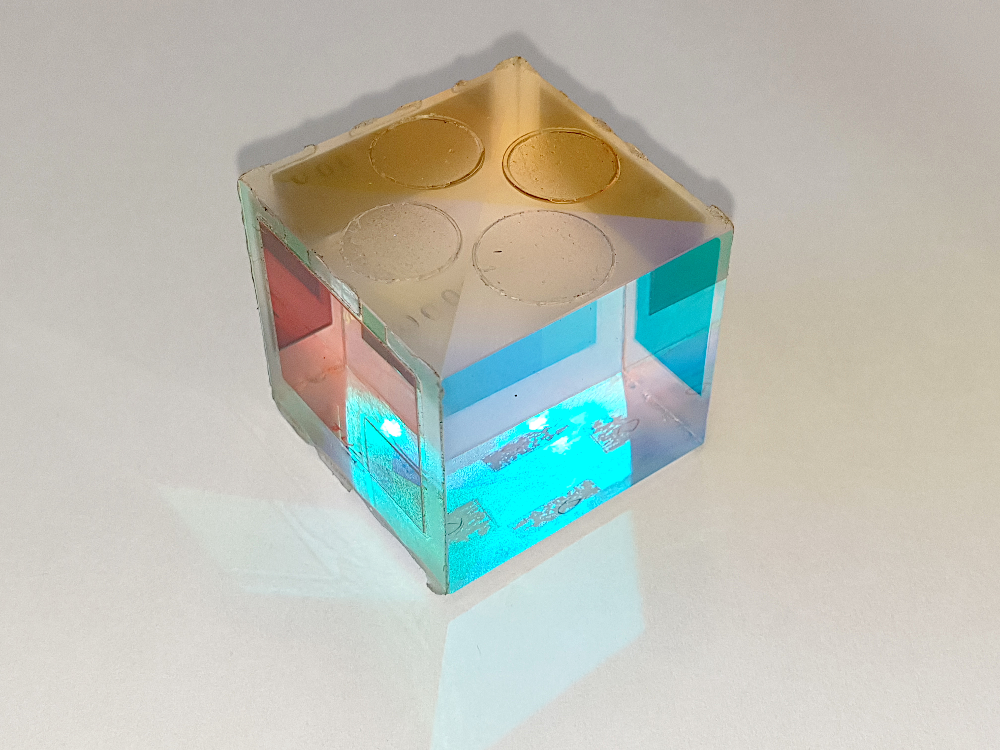

Fundamental Physics & Physical Laws
An exhaustive visual encyclopedia of Lucent GK Physics: Mechanics, Newton's and Kepler's laws, gravitation and satellite dynamics, thermodynamics and anomalous water expansion, acoustics and sound speed, geometric optics, total internal reflection, vision corrections, and electromagnetism.

SI Units, Dimensions & Newton's Laws of Motion
Fundamental standards of measurement and quantitative mechanics
Seven Fundamental SI Units & Standards
| Physical Quantity | SI Base Unit | Symbol |
|---|---|---|
| Length | Metre | m |
| Mass | Kilogram | kg |
| Time | Second | s |
| Electric Current | Ampere | A |
| Thermodynamic Temperature | Kelvin | K |
| Amount of Substance | Mole | mol |
| Luminous Intensity | Candela | cd |
*Supplementary Units: Plane Angle = Radian (rad); Solid Angle = Steradian (sr). Astronomical distance units: 1 AU = 1.496 × 10¹¹ m; 1 Light Year = 9.46 × 10¹⁵ m; 1 Parsec = 3.26 Light Years = 3.08 × 10¹⁶ m (largest unit).
Newton's Three Laws of Motion
Every body continues in its state of rest or uniform motion in a straight line unless acted upon by an external net force. Gives the qualitative definition of force. Examples: Passenger falling backward when bus starts abruptly; beating a carpet with a stick to dislodge dust particles.
The rate of change of linear momentum of a body is directly proportional to the applied force and takes place in the direction of the force. Provides the mathematical measure: Force = Mass × Acceleration. Example: A cricket fielder pulls his hands backward while catching a ball to increase impact time (Δt), thereby minimizing impulsive force.
To every action, there is always an equal and opposite reaction acting on two different bodies. Governs conservation of linear momentum. Examples: Recoil velocity of a fired rifle; propulsion of space rockets; swimming by pushing water backward.
Universal Gravitation & Orbital Satellite Dynamics
Variations of 'g', escape velocity mechanics, and geostationary orbits
Universal Gravitational Constant G = 6.67 × 10⁻¹¹ N·m²/kg² (determined experimentally by Henry Cavendish). Value of G is scalar and universal across space.
Maximum at the Poles; minimum at Equator (due to centrifugal rotation and Earth's oblate shape). Decreases going upward or deep underground. Exactly zero at Earth's center.
Minimum launch speed to permanently escape Earth's gravitational field. Moon's escape velocity is only 2.38 km/s; gas thermal velocity exceeds this, resulting in no lunar atmosphere.
Period T = 24 Hours. Orbits West to East in equatorial plane. Appears stationary from Earth's surface (used for telecom & weather). Polar satellites orbit at 600–800 km for remote sensing.
Heat, Thermodynamics & Anomalous Expansion of Water
Temperature scale relationships, phase changes, and modes of heat transfer
Temperature Scales & Equivalence
- The −40° Coincidence: At exactly −40°, Celsius and Fahrenheit scales read identical numbers (−40°C = −40°F).
- Absolute Zero (0 K): The theoretical lowest possible temperature: −273.15°C, where all molecular kinetic motion ceases.
- Triple Point of Water: 273.16 K (0.01°C) at 0.006 atm, where solid, liquid, and gas phases coexist in thermodynamic equilibrium.
Anomalous Expansion of Water
Almost all liquids expand upon heating and contract upon cooling. Water exhibits anomalous behavior between 0°C and 4°C:
(Volume is Minimum at 4°C)
Biological Significance: During severe winter, surface water cools and sinks until all lake water reaches 4°C. Further cooling causes water to expand and remain on top, freezing into an insulating ice layer at 0°C while liquid water beneath stays at 4°C, preserving aquatic life.
Modes of Heat Transfer
Wave Motion, Acoustics & Doppler Effect
Longitudinal wave mechanics, speed of sound across mediums, and echo reflection
Acoustic Frequency Bands
Speed of Sound Dynamics
Sound is a mechanical longitudinal wave requiring a medium. It cannot travel in a vacuum.
- Steel / Aluminium: ~5,100 m/s
- Water (Liquids): ~1,480 m/s
- Air (Dry at 20°C): ~343 m/s (332 m/s at 0°C)
- Speed increases with temperature (0.61 m/s per °C) and humidity, but is independent of atmospheric pressure.
Echo & Doppler Effect
Echo: Reflection of sound from an obstacle. Human ear maintains persistence of hearing for 0.1 seconds. Hence, minimum distance needed is: d = (343 × 0.1) / 2 = 17.15 m ≈ 17.2 Metres
Doppler Effect: Apparent increase in observed frequency when sound or light source approaches an observer (pitch rises/blue-shift) and decrease when receding (pitch drops/red-shift). Used in police radar guns and cosmological redshift measurements.
Optics, Total Internal Reflection & Human Eye Defects
Snell's Law, prism dispersion, Rayleigh scattering, and vision correction lenses
Total Internal Reflection (TIR)
Occurs when light travels from an optically denser medium to a rarer medium and the angle of incidence exceeds the Critical Angle (θc).
- Optical Fibers: Total internal reflection inside high-purity glass core with zero signal loss.
- Mirage in Deserts: Lower hot air has lower refractive index, causing TIR and virtual reflection of sky.
- Brilliance of Diamonds: Critical angle is exceptionally low (~24.4°); light suffers multiple TIR before escaping.
- Endoscopy: Medical visualization of internal organs.
Human Vision Defects & Lenses
Dispersion & Rayleigh Scattering
Dispersion (Prism): White light splits into VIBGYOR. Violet has shortest wavelength (highest frequency) and deviates the most; Red has longest wavelength and deviates the least.
Rayleigh Scattering: Intensity of scattered light is inversely proportional to fourth power of wavelength:
Blue light scatters ~16 times more than red light, making the clear sky look blue. At sunset, red light penetrates longest atmospheric path without scattering, painting the sky crimson.
Active Recall Flashcards
Interactive 3D flip cards covering physical laws, units, optical formulas, and thermodynamics
High-Yield Prelims Exam Simulator
Five standard multiple-choice questions on variations of 'g', myopia correction, anomalous water expansion, and TIR